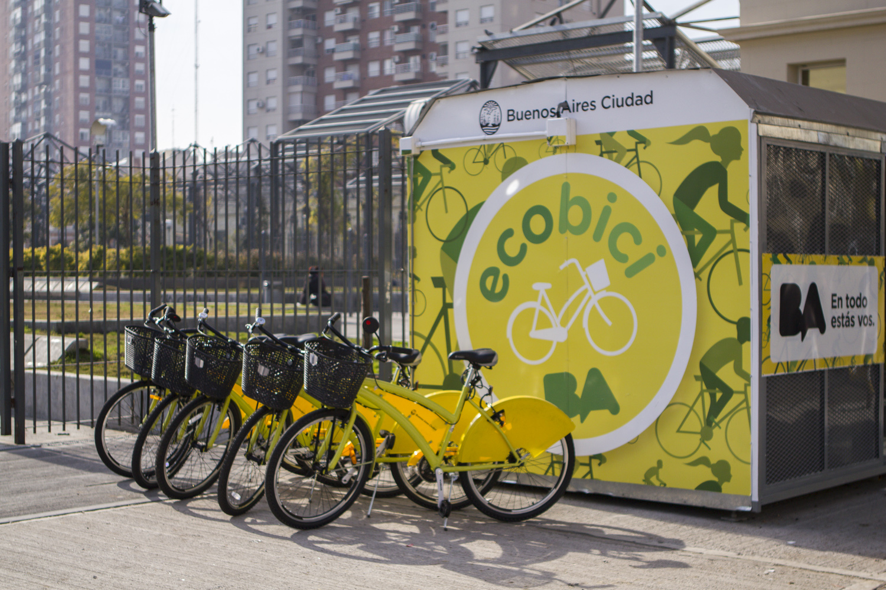
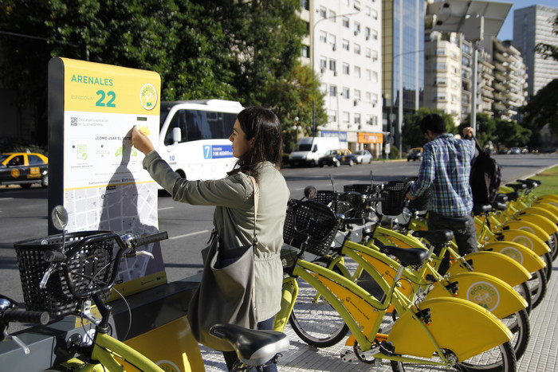
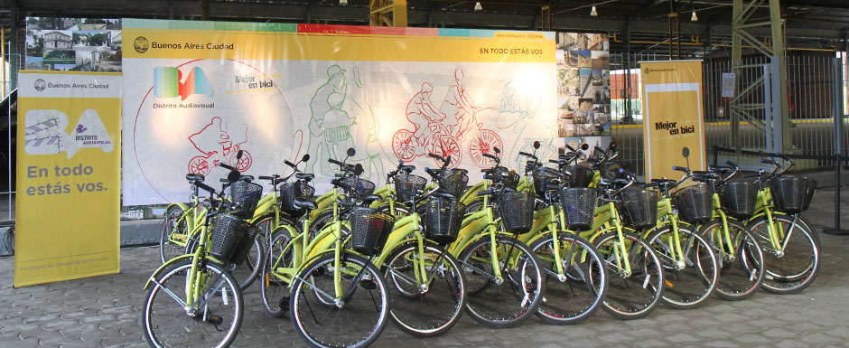

Images from Buenos Aires' Bike Share




Under the administration of Mayor Mauricio Macri, the Sustainable Mobility Plan ("Plan de Movilidad Sustentable" in Spanish) was formulated to reorgainze traffic in an efficient manner so that Buenos Aires residents can access different modes of well-organized transport systems and have a low impact on the environment. It emphasized the use of non-motorized transport, such as bicycles, to decrease congestion, reduce accidents, and discourage car use. One of the strategies was to develop Ecobici, a bike share system with dedicated cycleways. The "Sistema de Transporte Publico de Bicileta" law ("Public Bicycle Transportation System") that was was passed in 2007, along with the Sustainable Mobility Plan that came afterwards, paved the way for the start of the bike sharing program called "Mejor en Bici" ("Better by Bike") by December 2010.
By the end of 2012, two years after the inauguation of the cycling program, the share of cycling increased from 0.4% to 2%. More than 135 km of protected bike lanes have been added to Buenos Aires since inauguration.
For more information on Buenos Aires' bike share, please go to the Buenos Aires tourism website on cycling in the city (in English).
The Buenos Aires city government's Ecobici program provides free bikes for up to an hour at a time. If you want to continue to use the system, you must wait 15 minutes before picking up a new bike.
Bring a photocopy of your passport ID page and immigration stamp and follow the instructions on the following website: http://www.buenosaires.gob.ar/ecobici/sistema-ecobici/turistas.